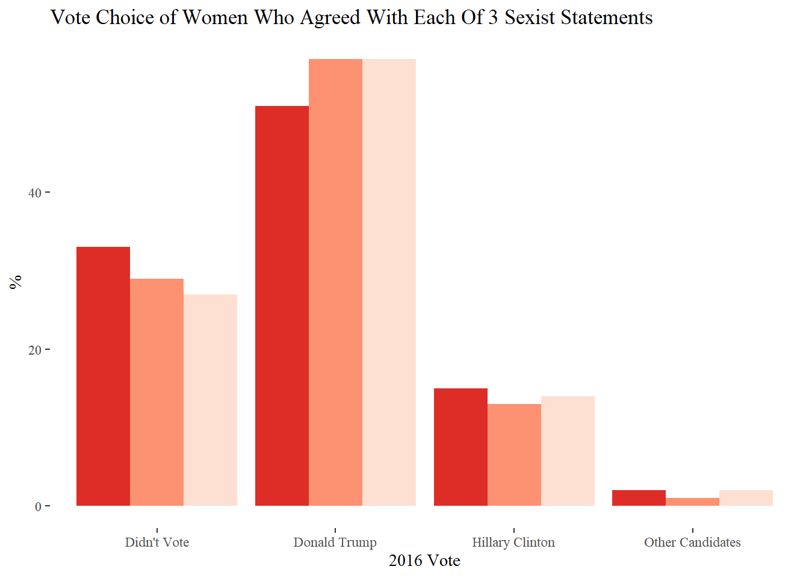

library(tidyverse)
library(haven)
library(labelled)
library(ggplot2)
library(pollster)
library(ggthemes)
library(RColorBrewer)
knitr::opts_chunk$set(echo = TRUE, warning=FALSE, message=FALSE)Final Project - The Women Who Voted For Trump
final project
UMass Poll_April2021
Karen Detter
Introduction
The common lore of the 2016 presidential election is that Donald Trump’s victory over Hillary Clinton was secured by the support of both privileged and disenfranchised white men trying to “make America great again” by reviving traditional conservative values, including gendered social roles. However, when the dust settled and the official post-election numbers were crunched by the Pew Research Center, this narrative was challenged by the fact that 47% of white women had voted for Trump (Pew Research Center, 2019, p.11). Instead of allying with a fellow female who ostensibly shared at least some of their individual priorities, these women supported a man well-known for his sexism and boorish behavior towards women.
Who are these women who voted for Donald Trump in 2016? In what ways do they differ from the women who voted for Hillary Clinton? The UMass Poll, a survey that collects public opinion data on a wide variety of political and social issues, may be able to provide some insight into these questions.
Data
The specific UMass poll data used for this analysis was collected in April 2021. The stratified sampling frame was aligned to the American Community Survey, and the final sample consisted of 1,000 respondents.
#read in SPSS data
April_UMass_Poll <- read_sav("_data/April_UMass_Poll.sav")
head(April_UMass_Poll)Each of the 222 columns in the data frame represents either a survey question or an identifier variable, and each of the 1,000 rows represents a unique observation. Because the data is already tidy, the next step is to wrangle the data frame into a form that is easily manipulated for analysis.
Since the UMass Poll includes questions about a wide variety of topics, a subset that includes only relevant columns needs to be created. After using the survey codebook to identify appropriate variables, the data frame can be pared down to include only the columns of interest:
#subset chosen variables
sel_vars <- c('weight', 'gender', 'party', 'ideology', 'vote2016', 'sexism1', 'sexism2', 'sexism3')
poll_selected <- April_UMass_Poll[sel_vars]
head(poll_selected)Because this data was imported from SPSS, the critical final step of transforming the variables to factor type is required before any analysis can be done:
#convert variables from haven_labelled values to factors
poll_sel_fact <- poll_selected %>%
mutate(gender = as_factor(gender), party = as_factor(party), ideology = as_factor(ideology), vote2016 = as_factor(vote2016), sexism1 = as_factor(sexism1), sexism2 = as_factor(sexism2), sexism3 = as_factor(sexism3))
head(poll_sel_fact)Analysis & Visualization
Since this analysis is concerned with women, the data must first be filtered and subsetted to isolate female cases:
poll_fem <- poll_sel_fact[which(poll_sel_fact$gender == 'Female'),]
head(poll_fem)Then, summary statistics can be generated to assess distribution frequencies:
#generate toplines
topline (df = poll_fem, variable = party, weight = weight, valid_pct = FALSE, cum_pct = FALSE) %>%
knitr::kable(digits = 0, caption = "Self-Reported Political Party ID WOMEN")| Response | Frequency | Percent |
|---|---|---|
| Democrat | 215 | 42 |
| Republican | 132 | 26 |
| Independent | 119 | 23 |
| Other | 17 | 3 |
| Not sure | 30 | 6 |
topline (df = poll_fem, variable = ideology, weight = weight, valid_pct = FALSE, cum_pct = FALSE) %>%
knitr::kable(digits = 0, caption = "Self-Reported Political Ideology WOMEN")| Response | Frequency | Percent |
|---|---|---|
| Very liberal | 92 | 18 |
| Liberal | 85 | 17 |
| Moderate | 139 | 27 |
| Conservative | 95 | 18 |
| Very conservative | 64 | 12 |
| Not sure | 39 | 8 |
topline (df = poll_fem, variable = vote2016, weight = weight, valid_pct = FALSE, cum_pct = FALSE) %>%
knitr::kable(digits = 0, caption = "Vote in 2016 Presidential Election WOMEN")| Response | Frequency | Percent |
|---|---|---|
| Hillary Clinton | 186 | 36 |
| Donald Trump | 139 | 27 |
| Other Candidates | 15 | 3 |
| Didn’t Vote | 173 | 34 |
Sexism indicator items measured agreement with each statement:
topline (df = poll_fem, variable = sexism1, weight = weight, valid_pct = FALSE, cum_pct = FALSE) %>%
knitr::kable(digits = 0, caption = "'Women seek to gain power by getting control over men' - WOMEN")| Response | Frequency | Percent |
|---|---|---|
| Agree | 103 | 20 |
| Disagree | 410 | 80 |
topline (df = poll_fem, variable = sexism2, weight = weight, valid_pct = FALSE, cum_pct = FALSE) %>%
knitr::kable(digits = 0, caption = "'Women are too easily offended' - WOMEN")| Response | Frequency | Percent |
|---|---|---|
| Agree | 156 | 30 |
| Disagree | 357 | 70 |
topline (df = poll_fem, variable = sexism3, weight = weight, valid_pct = FALSE, cum_pct = FALSE) %>%
knitr::kable(digits = 0, caption = "'Women exaggerate problems they have at work' - WOMEN")| Response | Frequency | Percent |
|---|---|---|
| Agree | 91 | 18 |
| Disagree | 422 | 82 |
Nothing particularly stands out from these toplines - party, ideology, and vote choice seem to be normally distributed, and the majority of women disagree with each sexism indicator. So far, there is no new information to help characterize female Trump voters.
The next step, then, is to examine cross-tabulations for relationships between variables:
#run crosstabs between variables
crosstab (df = poll_fem, x = party, y = vote2016, weight = weight, pct_type = "column", n = FALSE) %>%
knitr::kable(digits = 0, caption = "% FEMALE Vote in 2016 by Political Party")| party | Hillary Clinton | Donald Trump | Other Candidates | Didn’t Vote |
|---|---|---|---|---|
| Democrat | 80 | 3 | 11 | 35 |
| Republican | 1 | 69 | 26 | 18 |
| Independent | 14 | 25 | 49 | 30 |
| Other | 2 | 3 | 10 | 5 |
| Not sure | 4 | 0 | 4 | 13 |
crosstab (df = poll_fem, x = ideology, y = vote2016, weight = weight, pct_type = "column", n = FALSE) %>%
knitr::kable(digits = 0, caption = "% FEMALE Vote in 2016 by Political Ideology")| ideology | Hillary Clinton | Donald Trump | Other Candidates | Didn’t Vote |
|---|---|---|---|---|
| Very liberal | 33 | 2 | 23 | 14 |
| Liberal | 27 | 1 | 6 | 19 |
| Moderate | 33 | 16 | 46 | 28 |
| Conservative | 3 | 42 | 13 | 17 |
| Very conservative | 1 | 37 | 10 | 5 |
| Not sure | 4 | 2 | 3 | 17 |
The first two cross-tabulations reveal nothing new, as they both reflect typical voting along party lines.
The remaining variables comprise a measure of sexist attitudes assessed by asking respondents whether they agree with three separate statements.
Could agreement with sexist statements by women, which indicates a phenomenon known as internalized misogyny, correlate with voting for Donald Trump?
#explore relationship between female sexist attitudes and vote choice
crosstab (df = poll_fem, x = vote2016, y = sexism1, weight = weight, pct_type = "column", n = FALSE) %>%
knitr::kable(digits = 0, caption = "% FEMALE Response to 'Women seek to gain power by getting control over men' (By Vote Choice)")| vote2016 | Agree | Disagree |
|---|---|---|
| Hillary Clinton | 15 | 42 |
| Donald Trump | 51 | 21 |
| Other Candidates | 2 | 3 |
| Didn’t Vote | 33 | 34 |
crosstab (df = poll_fem, x = vote2016, y = sexism2, weight = weight, pct_type = "column", n = FALSE) %>%
knitr::kable(digits = 0, caption = "% FEMALE Response to 'Women are too easily offended' (By Vote Choice)")| vote2016 | Agree | Disagree |
|---|---|---|
| Hillary Clinton | 13 | 47 |
| Donald Trump | 57 | 14 |
| Other Candidates | 1 | 4 |
| Didn’t Vote | 29 | 36 |
crosstab (df = poll_fem, x = vote2016, y = sexism3, weight = weight, pct_type = "column", n = FALSE) %>%
knitr::kable(digits = 0, caption = "% FEMALE Response to 'Women exaggerate problems they have at work' (By Vote Choice)")| vote2016 | Agree | Disagree |
|---|---|---|
| Hillary Clinton | 14 | 41 |
| Donald Trump | 57 | 21 |
| Other Candidates | 2 | 3 |
| Didn’t Vote | 27 | 35 |
The sexism indicators seem to have an interesting relationship with vote choice.
Plotting responses to the sexism indicators by vote choice helps clearly visualize this relationship:
#tally percentages of women who agreed by 2016 vote
chart1 <- crosstab (df = poll_fem, x = sexism1, y = vote2016, weight = weight, n = FALSE, remove = c("Disagree"), format = "long")
chart2 <- crosstab (df = poll_fem, x = sexism2, y = vote2016, weight = weight, n = FALSE, remove = c("Disagree"), format = "long")
chart3 <- crosstab (df = poll_fem, x = sexism3, y = vote2016, weight = weight, n = FALSE, remove = c("Disagree"), format = "long")
chart_data <- bind_rows(chart1,chart2,chart3)
chart_data#wrangle data for plotting
vote_2016 <- c("Hillary Clinton", "Donald Trump", "Other Candidates", "Didn't Vote", "Hillary Clinton", "Donald Trump", "Other Candidates", "Didn't Vote", "Hillary Clinton", "Donald Trump", "Other Candidates", "Didn't Vote")
statement <- c("S1", "S1","S1", "S1", "S2", "S2", "S2", "S2", "S3", "S3", "S3", "S3")
pct <- c(15,51,2,33,13,57,1,29,14,57,2,27)
plot_data <- data.frame(vote_2016, statement, pct)
plot_data#visualize
ggplot(plot_data, aes(vote_2016, pct, fill=statement)) +
geom_bar(stat = "identity", position = "dodge") +
scale_fill_brewer(palette = 'Reds', direction = -1) +
theme_tufte() +
theme(legend.position = "none") +
labs(title = "Vote Choice of Women Who Agreed With Each Of 3 Sexist Statements", y = "%", x="2016 Vote") 
At first glance, it may not be too surprising to see that large percentages of Trump voters agreed with each of the sexist statements - but once you remember that only WOMEN voters are represented here, those numbers take on new importance. Women who voted for Donald Trump agreed with the sexist statements far more often than women in any of the other vote choice categories.
There is evidence from behavioral research that, during lifelong exposure to ingrained social norms of female inferiority and stereotypes, women themselves can internalize misogyny, often subconsciously. Could it be that this phenomenon is particularly prevalent in women who voted for Trump?
Reflection
I can honestly say that R has been the most difficult thing I’ve tried to learn in a long time! Having experience using SPSS added an extra hurdle, since I had to concentrate on letting go of the “that’s not how it works in SPSS” mental block. However, I can also honestly say that seeing nicely formatted tables and charts pop up with no errors gave me an incredible feeling of accomplishment.
As I was working through the videos and tutorials, I had a growing sense of anxiety from feeling like none of it was “clicking”. Completing the homework assignments gave me a bit more confidence, but I still felt like I wasn’t really “getting it”. But when I started digging in to my dataset and trying to do specific things, the proverbial lightbulb seemed to come on and I finally felt like I knew what I was doing. I guess I’m really a hands-on type of learner.
I would have liked to tackle more complex analysis in my final project, but I felt like it was a trade-off between complexity and making sure my code was solid and worked well. I would love to do further work on my research question with this dataset, maybe by combining the three sexism indicators into a single variable or including demographic variables with many categories that could be combined, such as income or education level. In any case, I do feel confident that I will be able to steadily improve my R skills!
Conclusion
Obviously, women choose presidential candidates based on a wide variety of personal priorities and shouldn’t be expected to vote en masse for a female candidate. But, the fact that women have been the larger portion of the US population for some time without ever being represented in the office of president makes it imperative to understand why a significant number of women voted for a known misogynist. The UMass Poll revealed that internalized sexism among female voters is an area that deserves further research.
References
Barrett, T. (2019). R for Researchers: An Introduction. https://tysonbarrett.com/Rstats/index.html
Nteta, T., La Raja, R., Rhodes, J. & Theodoridis, A. (2021). UMass Poll: The Biden Administration at 100 Days [Data set].
Nteta, T., La Raja, R., Rhodes, J. & Theodoridis, A. (2021). UMass Poll: The Biden Administration at 100 Days [Codebook].
Paikousis, L. (2019). How to use the Haven package. Retrieved from https://rpubs.com/lefkios_paikousis/how-to-haven
Pew Research Center (2019). For Most Trump Voters, “Very Warm” Feelings For Him Endured. Retrieved from https://www.pewresearch.org/politics/2018/08/09/an-examination-of-the-2016-electorate-based-on-validated-voters
Smith, D. (2020). Survey Research Datasets and R. https://socialresearchcentre.github.io/r_survey_datasets/
Wickham, H., & Grolemund, G. (2017). R for Data Science. O’Reilly. https://r4ds.had.co.nz
Wickham, H., Navarro, D., & Pedersen, T. L. (2020). ggplot2: Elegant Graphics for Data Analysis (Third). Springer. https://ggplot2-book.org/index.html